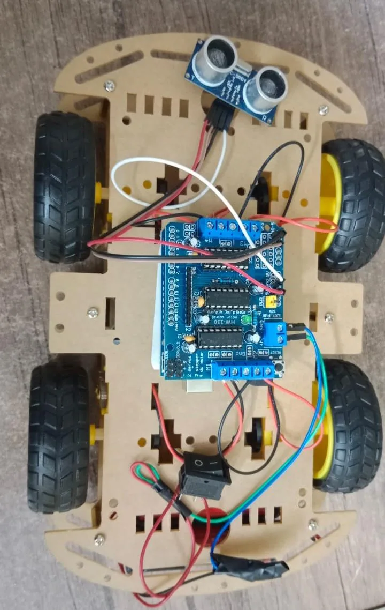
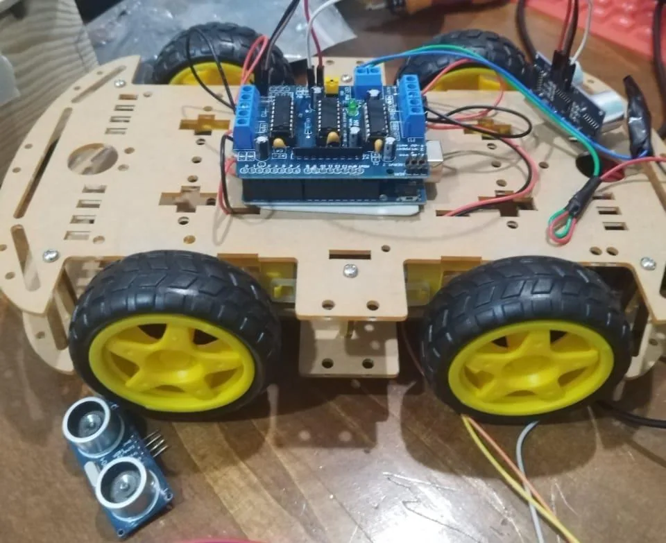

ACADEMIC TEAM PROJECT / 2023 — 2024
Medical Assistant Robot
Where ML meets robotics.
An experimental symptom-assessment tool paired with a wheeled Arduino robot, combining model exploration and embedded-system prototyping.
01 / THE IDEA
The idea behind
the build.
The academic project explored initial symptom-based disease assessment using Decision Tree, Naive Bayes and Random Forest, alongside a mobile four-wheel robot built around Arduino Uno and distance sensing.
The project investigated how simple machine learning methods and approachable embedded hardware could be combined to demonstrate an interactive medical-assistance concept. It was an educational prototype, not a clinically validated diagnostic tool.

ACTUAL TEAM PROTOTYPE · 202402 / MY ROLE
The part I
worked on.
- Participated in the team’s AI and machine learning work on symptom-based prediction.
- Collaborated on comparing approaches such as Decision Tree, Naive Bayes and Random Forest.
- Took part in assembling and integrating hardware including Arduino, motor drivers and ultrasonic sensing.
- Contributed to project testing, documentation and presentation.
03 / TECHNOLOGY
The building
blocks.
A snapshot of tools used in the project. Some technologies describe the wider team platform, not necessarily my individual implementation.
04 / REAL BUILD
Behind the
prototype.
These photographs come from the original project report and show the hardware while the team assembled and tested the robot.

ORIGINAL ACADEMIC PROJECT PHOTOGRAPH